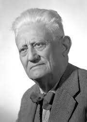

Come affermato all'interno dell’articolo 4 della Costituzione, il lavoro è un elemento
essenziale della nostra società.
I “Padri costituenti”, infatti, hanno deciso di enunciare alcune norme fondamentali a
tutela dei diritti nei luoghi di lavoro.
L'articolo 4 recita
"La Repubblica riconosce a tutti
i cittadini il diritto al lavoro e
promuove le condizioni
che rendano effettivo questo diritto.
Ogni cittadino ha il dovere di svolgere, secondo le proprie possibilità
e la propria scelta, un'attività o una funzione che concorra
al progresso materiale o spirituale della società.’’
La Costituzione, nella sua parte definita “rapporti economici”, provvede al riconoscimento di alcuni importanti diritti in capo ai lavoratori: ad esempio, il diritto di sciopero e libertà di iniziativa economica privata. Sancisce, inoltre, l’impegno da parte dello Stato a garantire ai cittadini il diritto al lavoro e, di conseguenza, a questi ultimi viene richiesto il dovere di svolgere, secondo le proprie possibilità e la propria scelta, un'attività o una funzione che permetta alla società di progredire in modo materiale o spirituale Il lavoro è la fonte di sostentamento di ogni individuo che, in questo modo, ha la possibilità di affermare la propria indipendenza ed autonomia.
LA STORIA
Nelle sedute dell'8 e del 9 maggio 1947, l'Assemblea Costituente approva l'articolo 4 della Costituzione Italiana. Nel progetto originario, questo articolo faceva parte del Titolo sui Rapporti economici. In un secondo momento, invece, fu deciso di inserirlo fra i Principi fondamentali per sottolineare che il «diritto al lavoro» non rappresentava una norma giuridica, ma un principio: un invito al legislatore affinché si adoperasse per rendere possibile una politica che cercava di ridurre il fenomeno della disoccupazione e a promuovere la piena occupazione (ovvero garantire un lavoro a ciascun cittadino).
GUSTAVO GHIDINI

Gustavo Ghidini, ex presidente della terza sottocommissione,
descriveva l'attualità, la modernità e la particolarità delle
disposizioni volte a disciplinare i rapporti economici, come un
“patto tra lo Stato e i cittadini”:
«Il lavoro è indubbiamente alla base dell'organizzazione civile,
politica e sociale del Paese e il testo lo afferma anche prima di
scendere ai “Rapporti economico-sociali”͢».
Questa affermazione si trova già nel primo articolo del progetto
di Costituzione.
Proprio nell’applicazione di questo principio si è deciso di
affermare il diritto al lavoro così come lo conosciamo: un diritto che è al contempo
anche un dovere. Questo, però, non è un dovere strettamente personale, ma
appartiene ad una dimensione soprattutto sociale, perché è in virtù del lavoro di
tutti che la società può vivere e prosperare.
A questo dovere corrisponde il diritto individuale al lavoro: solo adempiendo a
questo dovere si concretizza effettivamente il diritto di lavorare.
“Diritto e dovere in questo caso sono termini correlativi, l’uno si lega
indissolubilmente all'altro”.
Per concludere, vorremmo mettere in evidenzia che l'articolo 4 è molto importante
perché riconosce a tutti i cittadini il diritto al lavoro e promuove le condizioni che
rendono effettivo questo diritto.
In questo articolo viene ricordata l'importanza del lavoro e che tutti possiedono
questo diritto fondamentale.
Il lavoro ha una funzione essenziale per la società perché è la base di ogni sistema
economico ed è indice delle condizioni economico-sociali di un Paese.